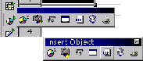

Next: Formatos de archivo
Up: StarDesktop: El Entorno de
Previous: El menú Ventana
Índice General
Es la que aparece verticalmente en las ventanas de documento. Algunos
de sus botones tienen una pequeña flecha verde. Son botones que abren
una barra con más botones cuando se mantiene un momento el puntero del
mouse pulsado sobre ellos. La barra que aparece se puede separar de la
barra de herramientas arrastrándola hacia la derecha desde la barra de
título. En ese momento se convierte en una barra de herramientas
flotante. En la figura 5.10se puede
ver el proceso: arriba cómo aparece la barra y abajo la barra
convertida en flotante.
Figura 5.10:
Barra de herramientas
|

|
Proyecto Cursos - LuCAS - http://lucas.hispalinux.es/htmls/cursos.html